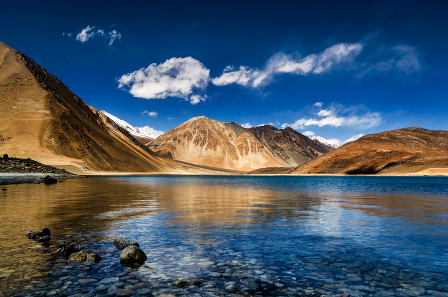
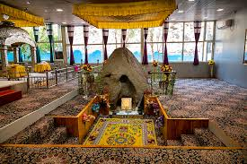
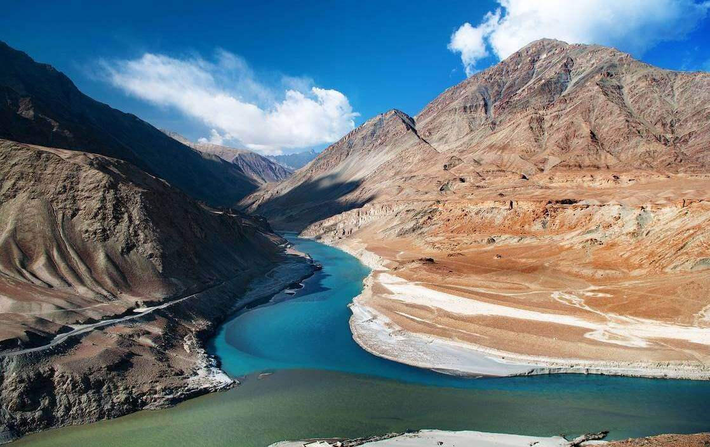
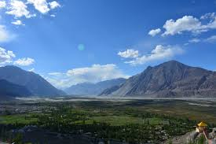
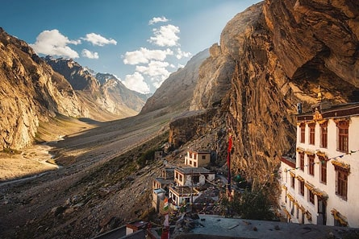
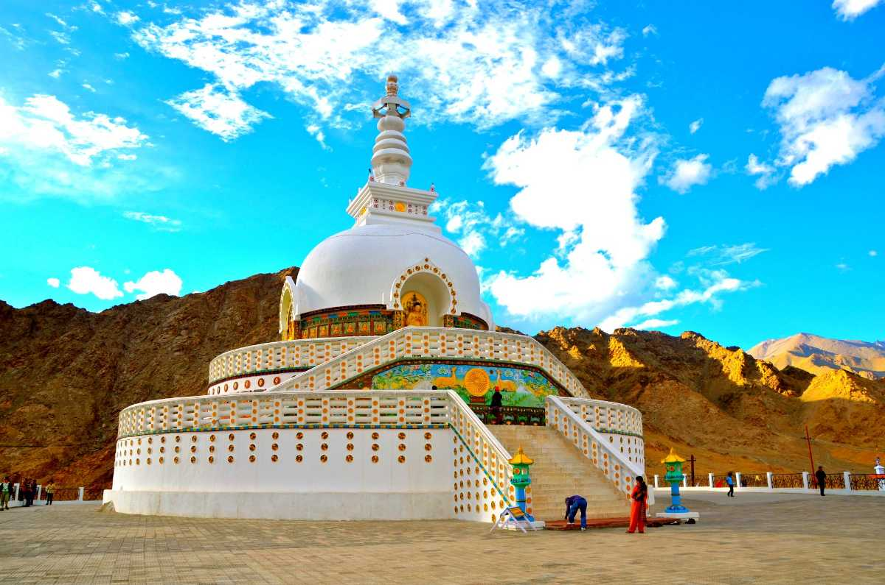
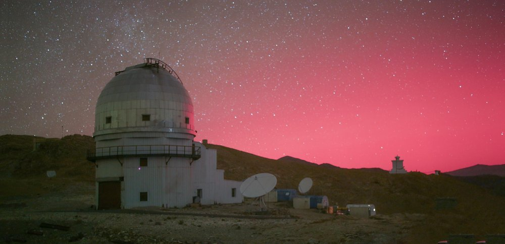
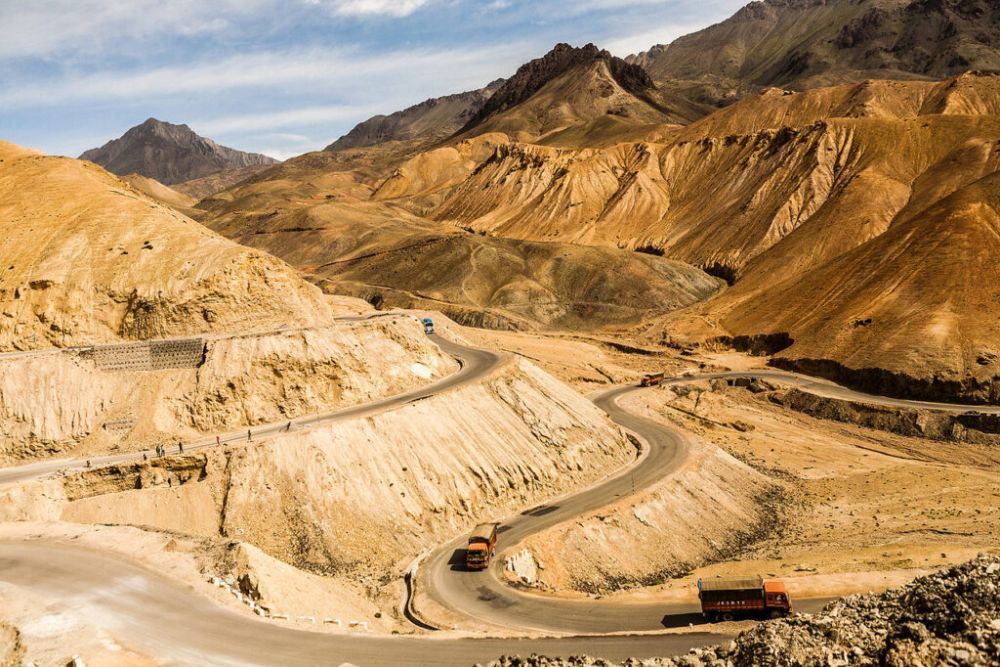

Pangong Lake
Best Time to Visit: May to September
For further information, visit the site

Khardung La
Best Time to Visit: March to May
For further information, visit the site

Thiksey Monastery
Best Time to Visit: May to November
For further information, visit the site

Hall of Fame
Best Time to Visit: May to October
For further information, visit the site

Gurudwara Pathar Saheb
Best Time to Visit: June to October
For further information, visit the site

Confluence of the Indus and Zanskar Rivers
Best Time to Visit: Last week of July to October
For further information, visit the site

Nubra Valley
Best Time to Visit: May to September
For further information, visit the site

Tso Moriri Lake
Best Time to Visit: June to September
For further information, visit the site

Zanskar Valley
Best Time to Visit: June to September
For further information, visit the site

Shanti Stupa
Best Time to Visit: April to June
For further information, visit the site

Indian Astronomical Observatory
Best Time to Visit: May to September
For further information, visit the site

Lamayuru Monastery
Best Time to Visit: April to June
For further information, visit the site